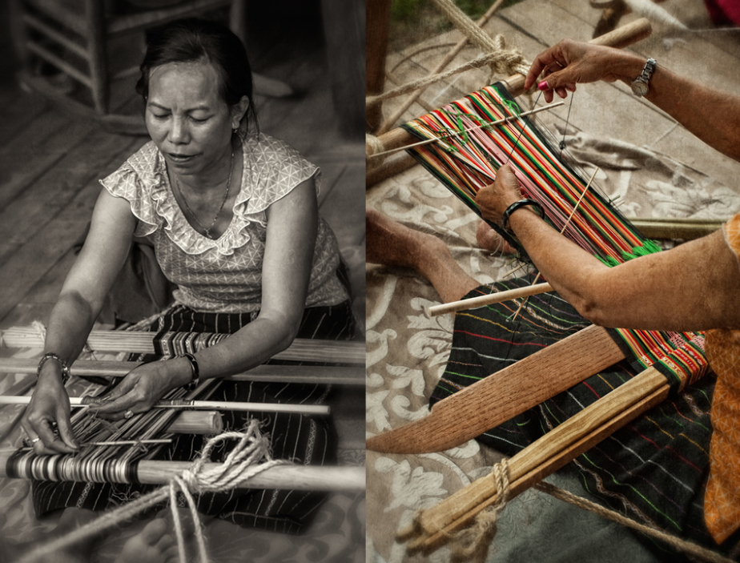
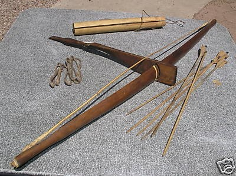
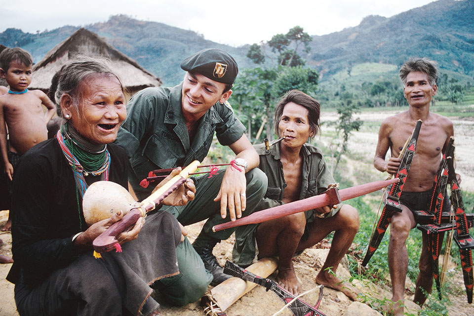

GALLERY
Montagnard Flag

This flag unites all the MTDs. Green for the mountains and forests of the Highlands.
White for peace and honesty. Red represents the blood and struggle that the MTDs have
gone through and the circle of gold place emphasis on justice and friendship.
The elephant represents the people, gentle but powerful.
Traditional Art



War Photos
